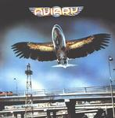

| Artist: | Aviary |
| Title: | Aviary |
| Label: | Rewind Records 55015-2 |
| Length(s): | 37 minutes |
| Year(s) of release: | 1977/2001 |
| Month of review: | [05/2002] |
| 1) | Soaring | 5.50 |
| 2) | Anthem For The U.S.A. | 5.09 |
| 3) | Puddles | 3.01 |
| 4) | As Close AS You Can Get | 4.23 |
| 5) | Mystic Sharon | 3.15 |
| 6) | Feel The Heart (Then You'll Be Mine Again) | 4.39 |
| 7) | Average Boy | 3.51 |
| 8) | I Will Hear | 2.15 |
| 9) | Maple Hall | 4.48 |
Anthem For The U.S.A. continues the line, but with more groove and more rhythmic variation. The choruses are again glam like, really slick, but the lines are great so I am not complaining.
For Puddles I coin Klaatu. However Aviary is way way better. The thing about this track is that I get a Singing In The Rain feeling about it. Some nice piano at the end too.
Queen is strongly felt in As Close As You Can Get. Not because of the vocals, but the high choruses choruses and the guitar sound are similar. Mystic Sharon brings us more of the same (but as always a distinctive melody which does not tire). It is also evident by now that the music of Aviary is not simply, it only seems so. The playing is great and there is plenty of rhythmic variation.
Feel The Heart (Then You'll Be Mine Again) starts out ELPish woth plenty of organ. The vocal melodies remind of Queen, the harpsichord also has its say. Toward the end the music gets to be very full in sound, lots of things happening.
Strange is the King Crimson on Discipline style guitar on Average Boy (before Discipline was recorded). Musically extremely varied again, especially for this kind of music. Strong bombast and for some reason a Genesis feel pervade the song. The music however continues to be typically American (Styx, but way better).
I Will Hear is an odd one, because it lacks the bombast and catchiness of the other tracks. It is in fact anthemic and romantic with mainly piano and vocals. Maple Hall is the closer with a very strong ELO link: a progressively tinged rock 'n' roll. The guitar adds a sinster touch.